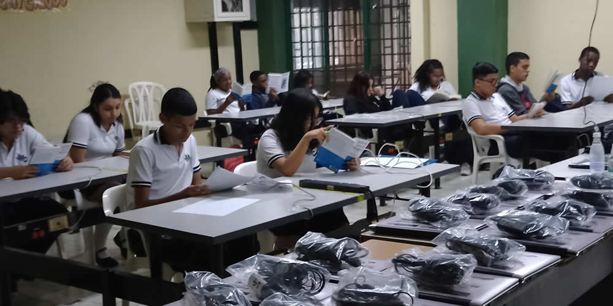

Muy buenos días.
Mi nombre es Juan Pablo Guzmán Alzate tengo 19 años. Nací el 26 de febrero de 2003 en la clínica los farallones, fui el niño más grande de la noche. Viví casi toda mi vida con mi abuela, mi hermana, mi tío, mi pero y mi mama. Estudie mi primaria en el colegio Honorio Villegas en este colegio tuve muchas experiencias buenas y malas. Después con mi hermana y mi mama nos pasamos a vivir en otro sitio.
Además en el mismo año pasé al bachillerato donde conocí mis 4 amigos que tengo en la actualidad.
Tuve muchas experiencias en esos grados. Al finalizar mi bachillerato en el mismo año pude entrar al sena a estudiar telecomunicaciones. Esta tecnología me ha parecido muy interesante y me gustaría avanzar más en mis estudios en los próximos años, quisiera estudiar la ingeniería de telecomunicaciones y luego especializarme en algún campo de esta profesión.
Soy una persona que no tiene preferencia en el tema musical, me gusta canciones de cualquier genero por ejemplo: electrónica, rap, música popular, pop, entre muchos más géneros. Desde pequeño me han gustado todos los géneros y esto es porque en mi antigua casa venían mis tíos y mis primos a escuchar canciones de diferentes géneros y me acostumbre a escuchar un poco de todo.